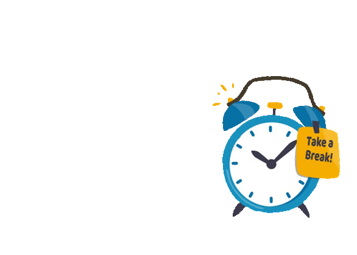
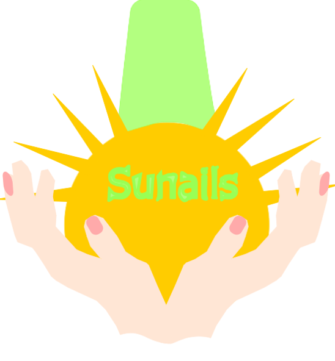
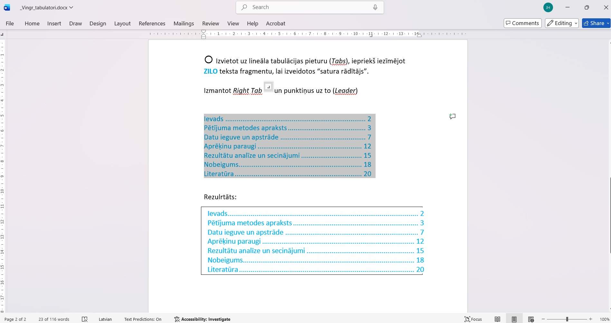
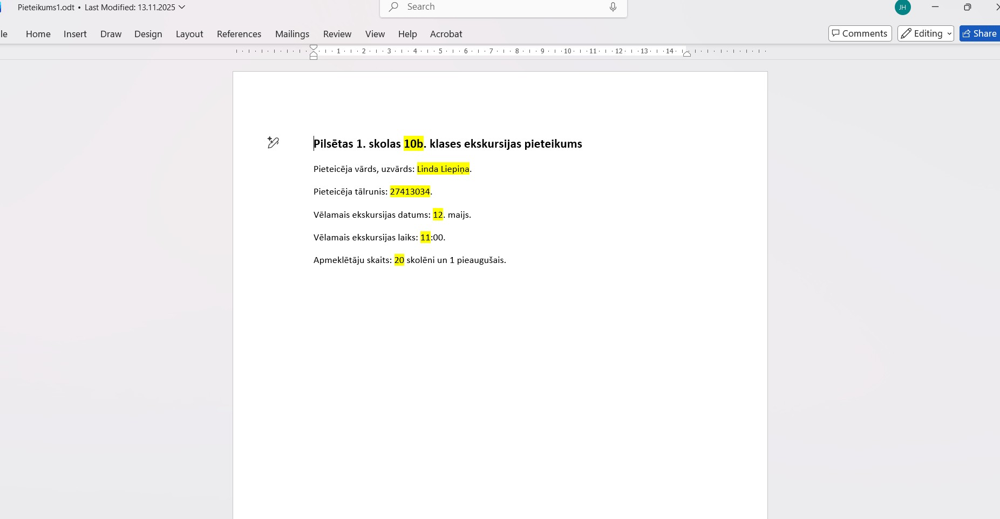
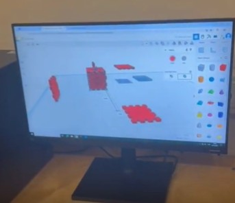
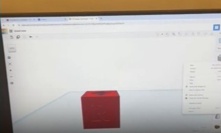
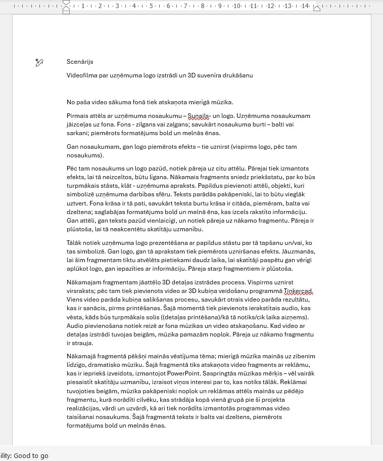
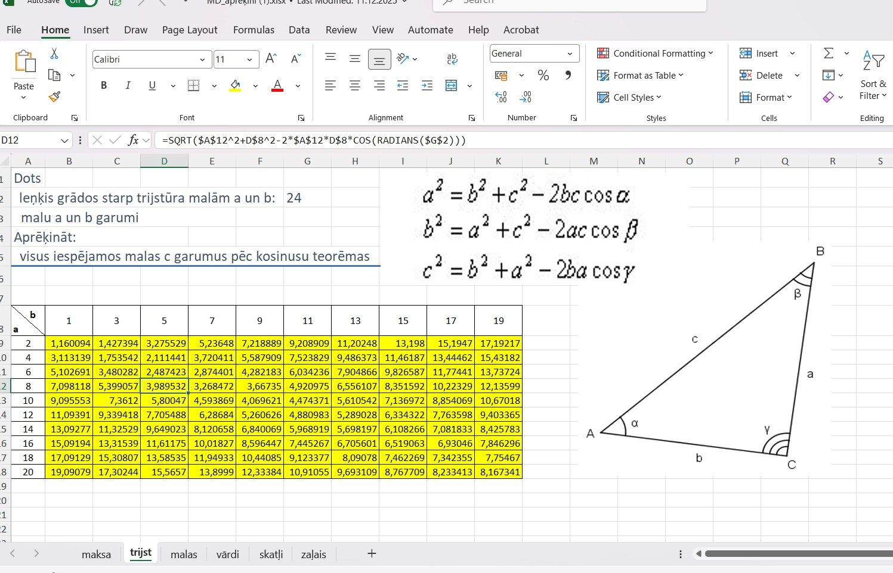

Attēlu apstrāde
Šajā mācību kursā esmu iepazinusi divus attēlu apstrādes veidus:
- Rastragrafika
- Vektorgrafika
Stundās, kurās tika veltītas rastragrafikai, es uzzināju, kā strādāt ar GIMP (attēlu apstrādes programmu); uzzināju, kā var interesanti pārveidot attēlus, apvienojot tos ar tekstu vai pārvēršot gif animācijā.


Vektografikas apgūšanas procesā, iemācījos, kā darbojas Inkscape, bija iespēja pašai izdomāt un realizēt uzņēmuma logo.

Paskaidrojums, kāpēc es izveidoju tieši šādu logo:
Uzņēmums “SUNAILS” nodarbojas ar nagu lakas, nagu pārklājumu ražošanu, augsti vērtējot draudzību videi. Šī iemesla dēļ galvenie objekti šī uzņēmuma logo ir rokas un nagu lakas pudelīte, kas reizē ir arī saule. Nagu lakas pudelīte ir dzeltenā un zaļā krāsā. Abas krāsas simbolizē ekoloģiju, dabu, akcentējot šī uzņēmuma vērtības. Logo ir attēlotas rokas, kuras tur sauli-nagu lakas pudelīti. Tas saistāms ar uzmanīgu attieksmi pret dabu, kā arī simbolizē procesu, kam šīs nagu lakas tiek izmantotas. Nagu lakas pudelītes vidū ir rakstīts uzņēmuma nosaukums, kas ir kā īpašs nagu lakas zīmols, apliecinot tādā veidā uzņēmuma profesionalitāti un līmeni.
Tekstapstrāde ar lietotni Word
Darbojoties ar lietotni MS Word, tika apgūtas teksta formatēšanas prasmes - stilu pielietojums, numerācija, satura rādītāju izveide, formulu rakstīšana.


Grupu darbs - 3D modelēšana
Grupu darba "Reklāmas suvenīrs" posmi:
- 3D kuba gabaliņa skaldņu izveide, izmantojot Tinkercad
- Detaļu apvienošana
- Suvenīra izdrukāšana un salikšana



Video - klips par reklāmsuvenīra izveidi
Tika filmēta grupas uzdevuma izpilde, un šis materiāls ar video montāžas programmu Kapwing tika apvienots vienā video. Video ir iekļauti gan skaņas efekti, gan fragmentu pāreja, gan teksts un vēl papildus PowerPoint lietotnē izveidotais animētais slaids ar reklāmu. Pirms video taisīšanas tika uzrakstīts scenārijs.

Video
Izklājlapas
Darbojoties izklājlapu lietojumprogrammatūrā MS Excel, esmu apguvusi, skaitļošanas, funkciju rīkus, grafiskos līdzekļus un tabulas.
- Darbs ar lietotni MS Excel
- Lejupielādējama datne
